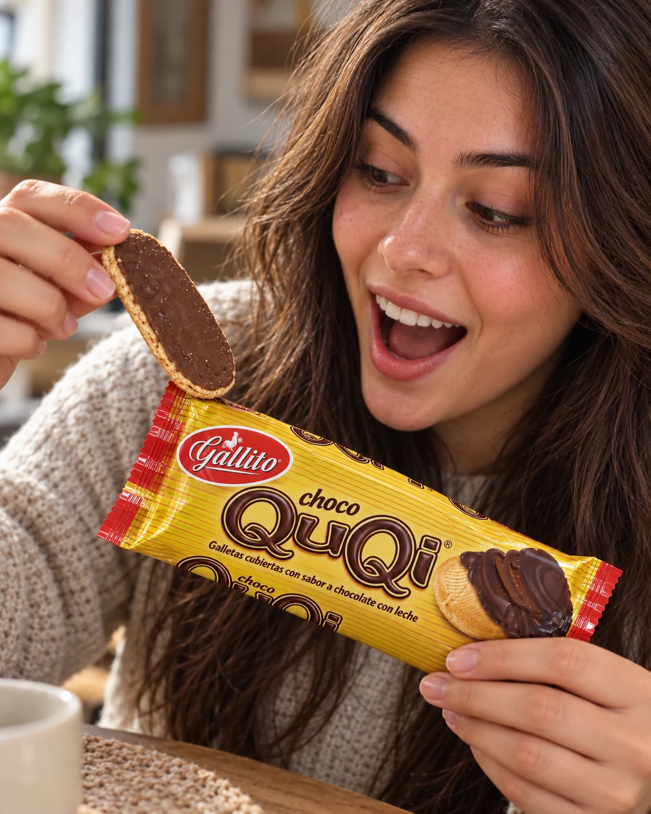

Gallito, marca de Dos Pinos, volvió a distribuir la galleta tras más de 17 años fuera del mercado. La empresa anunció que llegaría de forma gradual a los comercios desde el 15 de octubre. Un día antes, algunas tiendas Estación Dos Pinos adelantaron la venta y Diario Extra reportó filas.
Dos Pinos contó que el desarrollo tomó cerca de cuatro años e incluyó consultas a consumidores y pruebas. El proceso también planteó una pregunta práctica: qué conservar de la marca y cómo presentar la galleta a quienes nunca la habían probado.

La nostalgia puede atraer la primera compra
Quienes recordaban la galleta llegaron al lanzamiento con expectativas sobre su sabor, su forma o el momento en que la comían. Ese recuerdo puede despertar curiosidad. Para quienes no la conocían, el nombre y el producto eran nuevos: la marca debía convencerlos con la experiencia actual.
El Financiero consultó a un especialista en mercadeo sobre ese reto. Quienes recuerdan un producto pueden esperar que sepa como antes; las personas más jóvenes no comparten ese recuerdo. La nostalgia puede acercar a alguien a una primera compra, pero no asegura que vuelva a elegirlo.
Las filas no muestran cuántas personas volverán a comprarla
La venta anticipada y las filas mostraron interés en los puntos donde se ofreció la galleta. No indican cuántas unidades se vendieron ni si las personas la comprarán otra vez. Al 26 de octubre no encontramos datos públicos de ventas o compras repetidas que permitan medirlo.
Dos Pinos anunció que la distribución sería gradual. Así que no encontrar la galleta en un comercio no basta para concluir que la gente la rechazó: la disponibilidad puede variar según la zona y el establecimiento.
Qué puede comprobar un negocio antes de relanzar un producto
Los mensajes de clientes pueden revelar interés, pero no bastan para calcular la demanda. Para probar un producto nuevo o recuperar uno anterior, un negocio puede empezar con pocas unidades y registrar cuánto vende, cuánto tarda en agotarlas y si recibe pedidos después.
También hay que revisar el precio y la operación. Los comentarios no bastan si el margen es bajo, cuesta reponer el producto o no se puede entregar a tiempo. Antes de anunciar una fecha, conviene confirmar existencias, costos, entrega y quién responderá las consultas.
Cuando pasa la primera ola de publicaciones, la información de compra debe seguir clara: una foto fiel, la presentación, el precio y la disponibilidad. Decir que “volvió el favorito de todos” aporta menos que mostrar qué recibirá la persona. La fotografía de producto para negocios puede ayudar si representa con precisión el producto que se entrega.
La nostalgia despierta interés; las ventas dirán si se mantiene
El regreso despertó conversación y permitió que algunas personas probaran la galleta. Para saber si el interés dura hacen falta datos de disponibilidad, ventas y compras repetidas. Sin esas señales, se puede hablar de expectativa y del lanzamiento, no de un éxito comercial confirmado.
Fuentes
- CR Hoy: anuncio del regreso y distribución gradual, 29 de setiembre de 2026.
- CR Hoy: proceso de desarrollo y consultas a consumidores, 29 de setiembre de 2026.
- El Financiero: retos de distribución, recompra y expectativas, 15 de octubre de 2026.
- Diario Extra: venta anticipada en tiendas Estación Dos Pinos, actualizado el 25 de octubre de 2026.